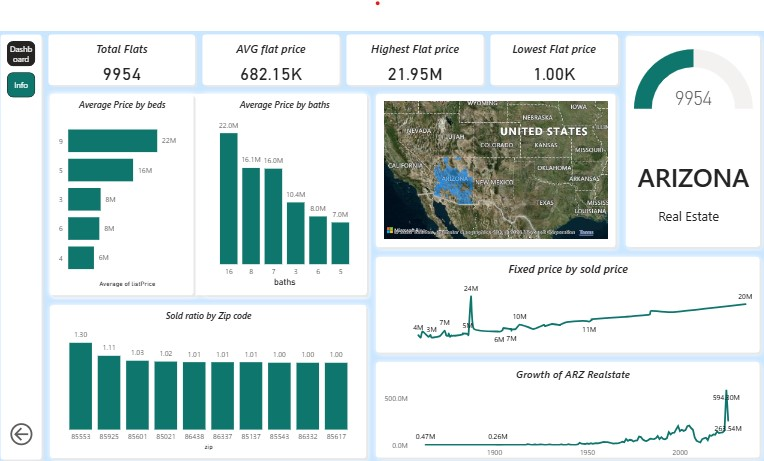

Excel • Power Query • Dashboard Design

Turning Real Estate Data into Actionable Insights Recently, I built an interactive Arizona Real Estate Dashboard focused on analyzing property market trends and transforming raw data into meaningful business insights. This project was more than creating charts — it was about understanding the story behind the data. Key Business Insights: Analyzed total property listings and market distribution Identified average, highest, and lowest property prices Compared pricing patterns based on beds and baths Tracked sales performance across ZIP codes Visualized long-term Arizona real estate market growth Used geo-based analysis to understand regional trends Skills Demonstrated: Data Cleaning & Transformation Data Visualization Dashboard Design Analytical Thinking Business Intelligence Data Storytelling Tools Used: Excel / Power BI One thing I learned during this project: Data becomes valuable when it helps people make better decisions. A good dashboard should not only look clean but also communicate insights clearly and effectively. This project helped me strengthen my analytical mindset and improve my ability to tell stories using data.